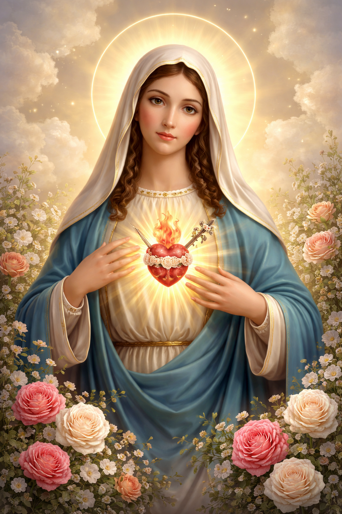

A Devoção ao Imaculado Coração de Maria: Refúgio e Caminho para Deus
A devoção ao Imaculado Coração de Maria é um convite para entrarmos na intimidade da Mãe de Deus. Venerar o Coração de Maria não é algo separado da adoração a Jesus; pelo contrário, é o caminho mais curto e seguro para chegar a Ele. O Coração de Maria é o espelho mais perfeito do Coração de Jesus. Nele, encontramos um amor puro, totalmente voltado para a vontade do Pai e para a salvação da humanidade. Como ela mesma disse em Fátima: "O meu Imaculado Coração será o teu refúgio e o caminho que te conduzirá até Deus".
O Fundamento Bíblico: "Maria guardava todas estas coisas no seu coração"
A Bíblia menciona explicitamente o coração de Maria em momentos cruciais. São Lucas nos diz que ela "guardava todas estas coisas, meditando-as no seu coração" (Lucas 2, 19). Isso nos mostra que o coração de Maria era um santuário de contemplação, onde ela buscava entender os mistérios de Deus na vida de seu Filho. É um coração que amou perfeitamente, que sofreu profundamente e que agora intercede gloriosamente por nós no céu.
"Por fim, o meu Imaculado Coração triunfará." (Promessa de Nossa Senhora em Fátima, 1917)
As Revelações de Fátima e a Reparação
Embora a devoção seja antiga, ela ganhou uma urgência profética com as aparições de Fátima em 1917. Nossa Senhora mostrou seu Coração cercado de espinhos aos pastorinhos, representando as ofensas e ingratidões dos homens. Ela pediu a prática da Comunhão Reparadora dos Primeiros Sábados, que consiste em confessar, comungar, rezar o terço e fazer 15 minutos de meditação sobre os mistérios do Rosário em cinco meses seguidos, com a intenção de desagravar o seu Coração.
O Significado dos Símbolos
Diferente do Coração de Jesus, que é cercado de espinhos da Paixão, o Coração de Maria é geralmente representado com:
- Rosas Brancas: Simbolizam sua pureza e imaculada conceição.
- Uma Chama: Representa o ardor de seu amor por Deus e por seus filhos.
- Uma Espada: Recorda a profecia de Simeão e suas dores aos pés da Cruz.
- Luz: Simboliza que ela é a "cheia de graça", refletindo a luz de Cristo.
Por que se Consagrar ao Coração de Maria?
Consagrar-se ao Imaculado Coração de Maria significa entregar-se totalmente aos cuidados da Mãe para que ela nos molde à imagem de Jesus. É colocar nossa vida, nossos bens e nossos méritos em suas mãos puríssimas. São Luís Maria Grignion de Montfort ensina que Maria é o "molde de Deus": quem se coloca nela, rapidamente assume as feições de Cristo.
Conclusão: Um Coração de Mãe
Em um mundo cheio de incertezas e perigos, o Imaculado Coração de Maria é o nosso porto seguro. Ela nos conhece pelo nome e cuida de cada detalhe de nossa vida com uma ternura infinita. Não tenha medo de recorrer a ela. Que o triunfo do seu Coração comece hoje, dentro do seu próprio coração.
Doce Coração de Maria, sede a nossa salvação!